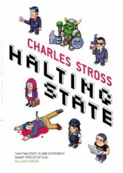

Halting State

by Charles Stross, 2007.
It's a tale of corporate shenanigans, online virtual reality computer gaming, scams, police on the beat, software contractors, and political intrigue, set in the midst of a near-future Scotland. It's told in first person, by a rotating set of a half-dozen characters, which I found distracting.
The Scottish vernacular and the boozed-up Brit attitudes in a mildly science-fictional setting come across as parochial rather than grungy, and projected technologies such as self-driving cars and virtual realities all seem too intrusive and out of place.
The premise oscillates between nauseating and preposterous, as an in-game robbery of virtual items gradually tips off its investigators that someone, somewhere, has got their hands on some heavy-duty decryption keys with which far more sinister acts are being perpetrated. Before it's done, there is a scene where the software engineer caught in the middle of it all has to play a swords-and-sorcery online computer game, upon the outcome of which hangs the safety of the free world. Oh deary.
I really, really, really, loved Stross' Accelerando, so maybe my expectations were just set too high. Can this really be from the same author, and written a scant 12 months afterwards?
Rating: 3/10. Letdown.
Comments
Comments powered by Disqus